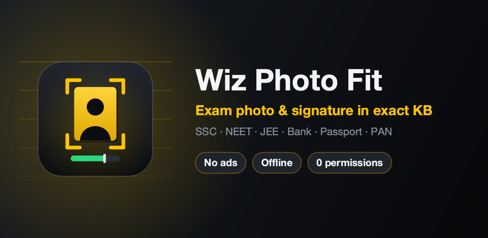

Resize your photo and signature to the exact size and KB that an online form asks for. Pick your exam, pick a photo, and get a file inside the limit, for example a 20–50 KB photo and a 10–20 KB signature. Everything runs on your phone, with no login.
SSC CGL, CHSL, MTS, GD · UPSC · RRB NTPC, Group D · IBPS PO, Clerk · SBI PO, Clerk · RBI · JEE Main · JEE Advanced · NEET UG · NEET PG · CUET UG / PG · GATE · CAT · CLAT · NIFT · NATA · ICAR · UGC NET · CSIR NET · CTET · BPSC · MPSC · UP Police · Agniveer · Navodaya · Sainik School · PAN card. Make your own size in px, cm, mm or inch with DPI and KB limits.
India passport, visa and OCI (35 × 45 mm), USA 2 × 2 inch, UK, Schengen, Canada, Australia, UAE and China photos, with a print sheet of many copies on 4 × 6 inch or A4 paper.
Compress many photos at once to 20 KB, 50 KB, 100 KB, 200 KB or 500 KB, and convert to JPG, WEBP or PNG.
Privacy policy · Photo sizes change every year: always check your latest official notification. Photo Fit is an independent tool and is not affiliated with any government body or exam authority.
Wiz Labs · blazewizofficial@gmail.com